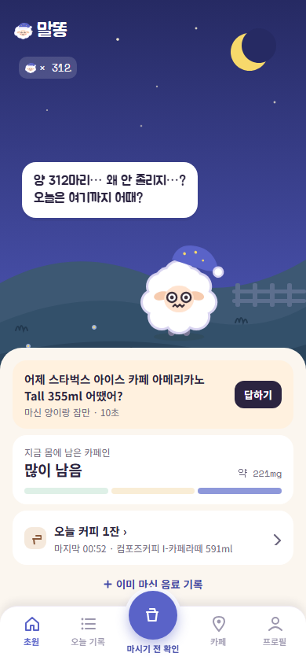
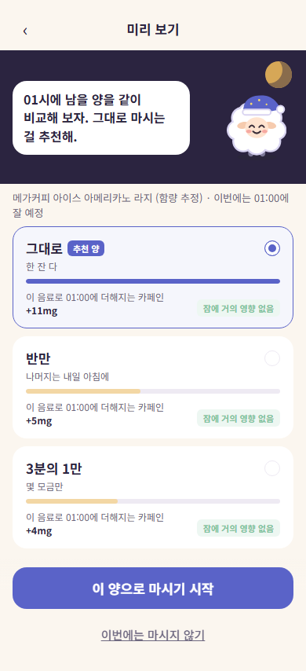
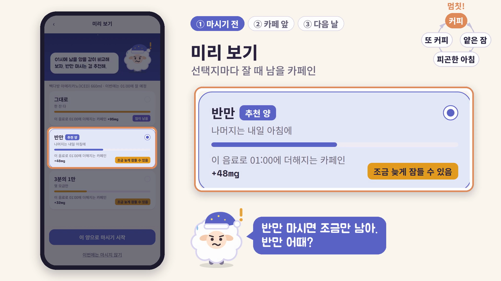
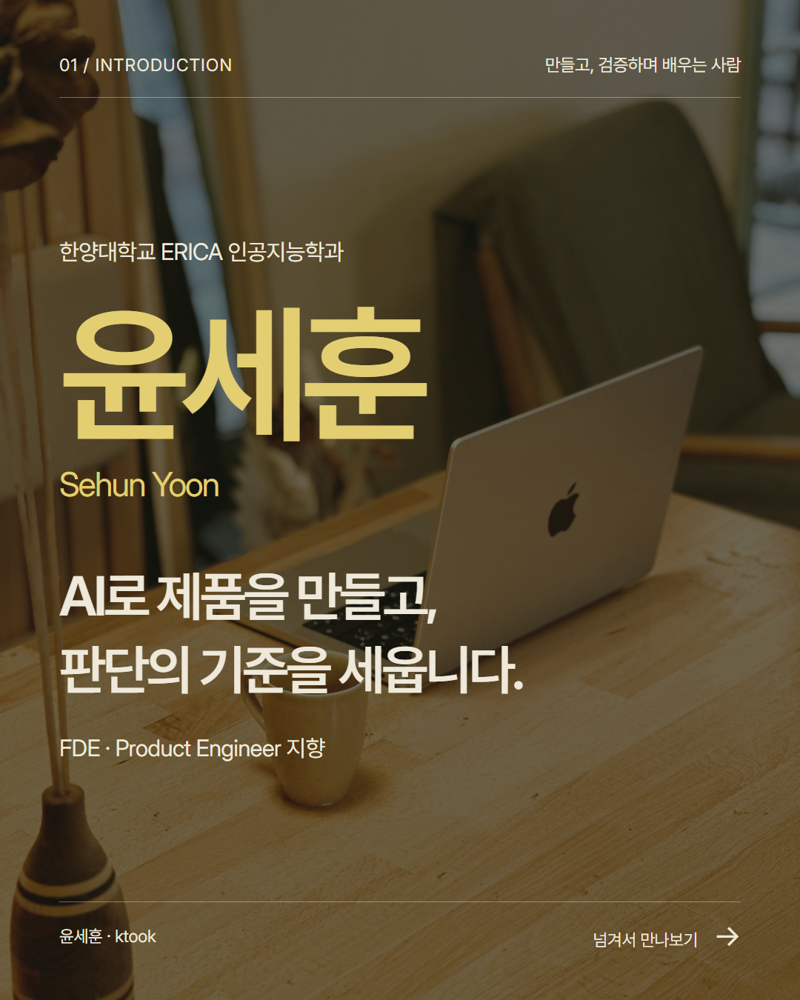
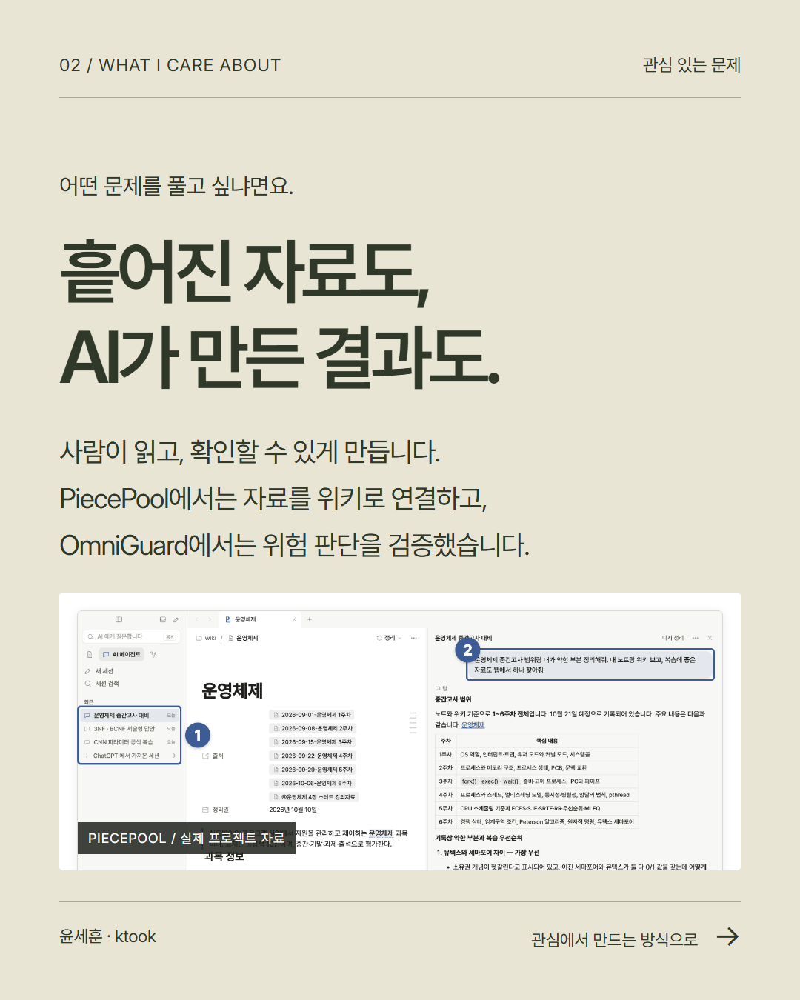
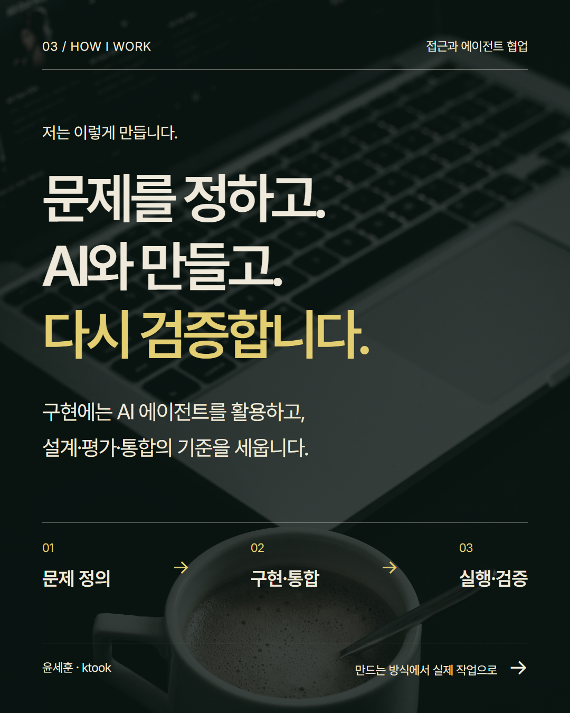
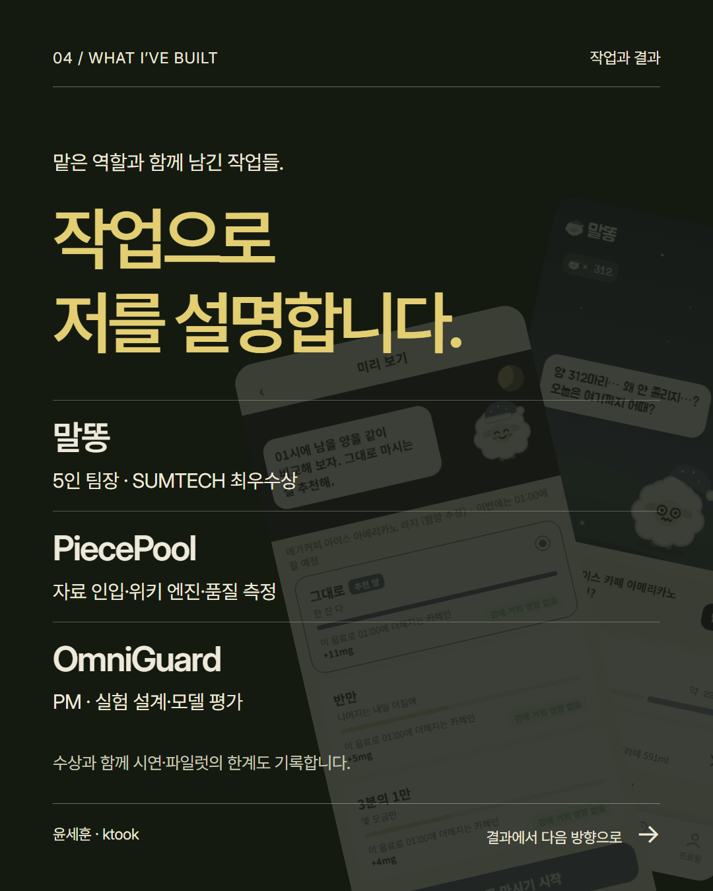
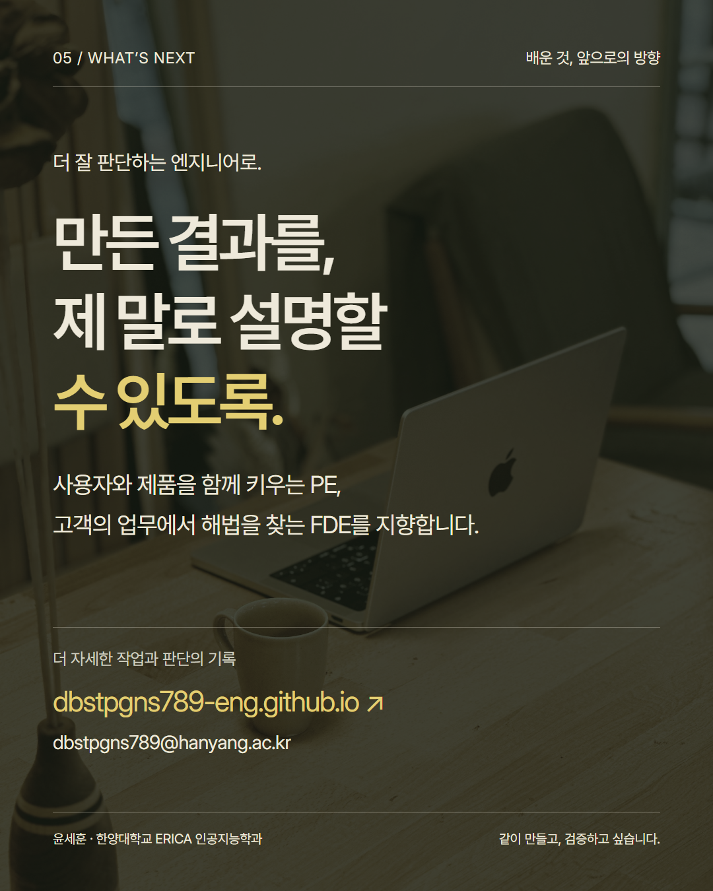

함께 쓸 구조를 먼저.
앱·DB·로그인·계산·API와 테스트의 공통 뼈대를 만들고, 담당 경로와 문구 규약을 맞췄습니다.
윤세훈 / FDE · Product Engineer 지향
문제 정의부터 설계, AI와의 구현, 검증까지.
제가 내린 판단과 결과의 한계를 작업으로 설명합니다.
한양대학교 ERICA 인공지능학과 3학년
융합보안학과 다중전공 · 2028.02 졸업 예정


기획 · 공통 구조 · 통합 · 검증
커피를 마시기 전에,
오늘 밤에 남을 카페인과
다른 선택지를 비교합니다.

실제 앱을 녹화한 팀 시연 자료입니다. 실제 사용자 테스트는 진행하지 못했으며, 카페 앞 알림은 대회장 좌표 한 곳에서 시연했습니다.
WHAT I OWNED
각자 빠르게 만드는 것과, 같은 제품을 만드는 것은 달랐습니다.
제가 맡은 일은 무엇을 만들고, 어떤 결과를 합칠지 정하는 것이었습니다.
앱·DB·로그인·계산·API와 테스트의 공통 뼈대를 만들고, 담당 경로와 문구 규약을 맞췄습니다.
작성자보다 기획·문서와의 일치를 기준으로 삼고, 검토 후 main에 반영할 시점을 판단했습니다.
빈 DB에서 앱을 다시 띄우고 E2E와 사람의 확인을 거쳤습니다. 에이전트 세션도 역할별로 나눴습니다.
코드와 문서 초안에는 Claude Code를 활용했습니다. 저는 기획·설계·검토·통합을 주도했고, 디자인 시안과 일부 화면·배포 워크플로는 팀원이 담당했습니다.
THE THINKING BEHIND IT
무엇을 만들었는지에서 한 걸음 더.
왜 그렇게 만들었고, 무엇이 남았는지 정리했습니다.
시험과 과제 마감 앞에서 저녁 커피를 마시는 대학생을 대상으로 했습니다. 커피가 잠을 방해한다는 것을 알아도, 마시는 순간에는 이 한 잔이 잘 시각까지 얼마나 남을지와 대신 무엇을 고를 수 있는지 알기 어려웠습니다. 팀원 두 명의 실제 기록과 기존 카페인 앱 사용 경험을 바탕으로 문제를 정리했습니다.
처음의 직장인 대상 기획은 통계와 기사에 기대고 있어, 팀 안에 실제 경험과 기록이 있는 대학생으로 대상을 좁혔습니다. 음료·상황·잘 시각을 고르면 마시기 전 선택지별 잔존 카페인을 비교하고, 다음 날 두 번의 탭으로 마신 양과 잠을 돌아보게 했습니다. 카페인 계산은 반감기 공식으로 처리하고 국내 카페의 공식 함량이 공개된 메뉴를 사용했습니다. 수면 장애 진단, 수면 기기 연동, 앱이 닫힌 동안의 위치 추적은 범위에서 제외했습니다.
팀원 다섯 명이 각자 AI 에이전트와 개발한 결과를 합치기 위해 공통 뼈대·담당 경로·문구 규약과 통합 절차를 먼저 정했습니다. Claude Code로 코드와 문서 초안을 구현하고, 저는 기획·설계와 결과 검토·main 반영 시점을 판단했습니다. 통합·채점 검토·화면 개발 세션을 나누고, 담당 범위 검사와 빈 DB에서의 E2E 검증을 통합 절차에 넣었습니다. 앱 내부의 카페인 계산에는 LLM을 호출하지 않았으며, 에이전트는 개발과 검증 과정에서 활용했습니다.
발표·학생 투표를 합한 최종 순위
마감 AI 채점 · 해당 채점 순위 3위
SUMTECH 2026에서 최우수상과 최종 2위를 받았습니다. AI 채점은 41.7/50점이었고, 마감 AI 채점 순위는 3위로 최종 순위와 구분됩니다. 실제 앱을 녹화한 1분 50초 시연 영상과 발표자료를 남겼습니다. 실제 사용자 테스트는 진행하지 못했으며, 카페 앞 알림은 대회장 좌표 한 곳에서 시연한 수준입니다.
근거를 많이 붙이는 것보다 주장과 정확히 맞는 근거를 고르는 일이 중요했습니다. 여러 변경을 한꺼번에 반영하면 점수 변화의 원인을 가르기 어려워, 다음에는 한 번에 하나씩 바꾸고 예측을 먼저 기록하겠습니다. 에이전트의 보고를 저장소와 실행 결과로 확인하고, main 반영 규칙은 브랜치 보호 같은 장치로도 뒷받침하겠습니다.
관심 있는 문제부터 만드는 방식, 작업과 앞으로의 방향까지.





옆으로 넘겨 보거나 카드를 눌러 크게 볼 수 있습니다.
인스타그램용 PNG 5장 받기 ↓자료를 정리하는 도구부터 산업안전 영상까지.
각 프로젝트에서 맡은 역할과 현재 상태를 함께 남깁니다.

자료 인입 · 위키 엔진 · 품질 측정
흩어진 자료와 AI 대화를 출처가 남는 로컬 Markdown 위키로 정리하는 데스크톱 앱입니다.
진행 중 · macOS·Windows 파일럿
제품 소개 ↗자료 인입·위키 엔진의 설계·개발과 품질 측정을 맡았습니다. 제가 세운 좋은 위키의 기준에 실제 결과가 얼마나 가까운지 확인하며 개선했습니다. 최신 소스는 비공개이며 설치 파일은 공개되어 있습니다.
공개 설치 파일 ↗
PM · 판단 기준 · 실험 설계 · 모델 평가
산업안전 영상의 끼임 위험을 판단하고 사고 직전 정지와 헛정지를 함께 평가했습니다.
2026.10 발표 · 실제 설비 미연동 · 영상 시연
프로젝트 저장소 ↗PM으로 판단 기준과 실험을 설계하고 규칙·학습 모델을 평가했습니다. 적은 데이터에서 과적합한 학습 모델을 제외했습니다. 최종 정지 판정 8/10, 헛정지 5.7회/분의 결과와 한계를 기록했습니다.
기획 · AI 파이프라인 설계
청년 전세대출의 조건·상품·서류 안내 흐름을 설계했습니다. 사업단 단장상을 받았으며 공개 코드는 mock 기본 백엔드 버전입니다.
백엔드 저장소 ↗3인 팀 대표 · 데이터 · 평가 · 검토
악성 에이전트 스킬 탐지 과제에서 평가 기준과 코드 검토를 맡았습니다. 정적·LLM 탐지기 구현은 팀원이 담당했습니다.
진행 중인 과제 ↗KITECH 근로 과제 · 단독 개발·배포
논문 PDF를 카드뉴스로 바꾸고 수치를 원문과 대조했습니다. 충분한 사용자 피드백 없이 발생한 비용 문제로 서비스를 중지했습니다.
개발 기록 ↗FDE · PRODUCT ENGINEER 지향
한양대학교 ERICA 인공지능학과 3학년
융합보안학과 다중전공 · 2028.02 졸업 예정
AI 에이전트와 함께 제품을 구현하며, 문제 정의·파이프라인 설계·평가와 통합을 맡아 왔습니다. Product Engineer로서는 사용자의 이야기를 듣고 같은 제품을 꾸준히 개선하고 싶습니다. FDE로서는 연구실이나 기업의 업무를 이해하고, 제품과 기술을 조합해 고객의 문제를 해결하고 싶습니다.
한국생산기술연구원 국가근로장학생논문 기반 콘텐츠 생성 프로젝트 PaperSweep을 개발·배포했습니다. 서비스는 현재 중지돼 있습니다.
AI서비스톤 멘토2026 SW미래채움×AI·SW중심대학 연합 경진대회에서 참가자의 기획과 구현을 도왔습니다.
국립순천대학교 총장 · 말똥
정보통신기획평가원·AI·SW중심대학협의회 · PiecePool
한양대학교 ERICA 데이터보안·활용혁신융합대학사업단
한국데이터산업진흥원
BUILD
Python · TypeScript · SQL
FastAPI · Next.js · Electron
AI & DELIVERY
PyTorch · LLM API
Docker · Git